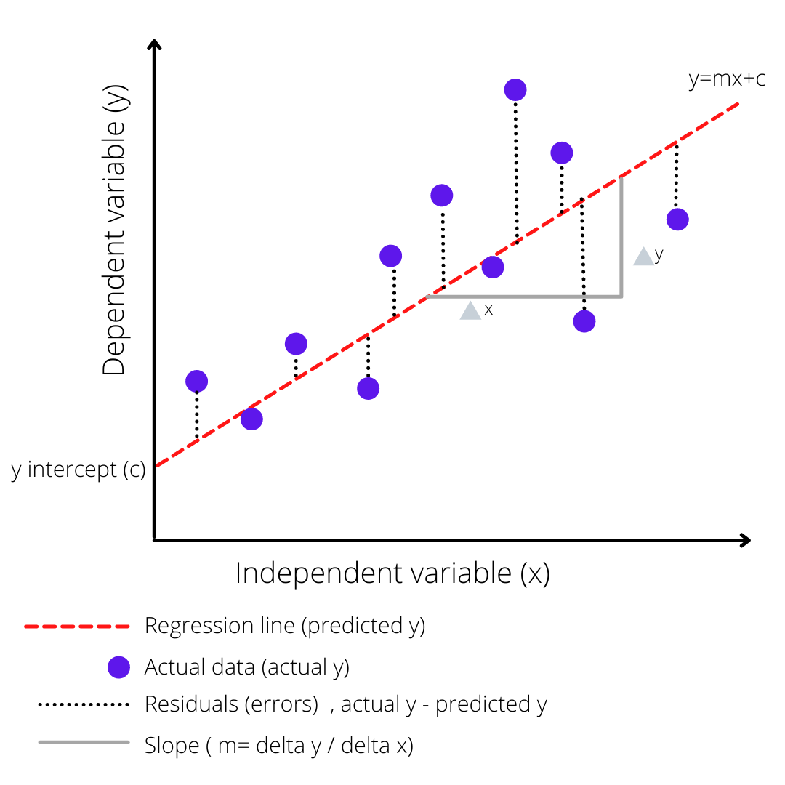

What is Supervised Learning?
- Definition: Learning from labeled data to make predictions
- Labeled Data: Input → Output pairs (training examples)
- Goal: Learn mapping function f(x) = y
Two Main Tasks:
- Regression: Predict continuous values (prices, temperatures)
- Classification: Predict categories (spam/not spam, yes/no)
Linear Regression
Purpose: Predicts continuous numerical values
y = β₀ + β₁x + ε
Key Components:
- β₀ (Intercept): Y-value when x = 0
- β₁ (Slope): Change in y per unit change in x
- ε (Error): Random noise/unexplained variation

Applications:
- House price prediction
- Sales forecasting
- Stock market analysis
- Economic growth modeling
Limitations:
- Only captures linear relationships
- Sensitive to outliers
- Assumes constant variance
Logistic Regression
Purpose: Used for binary classification (0/1, Yes/No)
p = 1 / (1 + e⁻ᶻ)
where z = β₀ + β₁x
Key Features:
- Sigmoid Function: Maps any real number to (0,1)
- Output: Probability of belonging to positive class
- Decision Boundary: Usually p = 0.5
Applications:
- Email spam detection
- Medical diagnosis
- Customer churn prediction
- Marketing response prediction
Advantages:
- Simple and fast
- Highly interpretable
- No tuning of hyperparameters
- Provides probability estimates
Linear vs Logistic Regression
| Aspect |
Linear Regression |
Logistic Regression |
| Output Type |
Continuous values |
Probability (0-1) |
| Task Type |
Regression |
Classification |
| Function |
Straight line (linear) |
S-curve (sigmoid) |
| Range |
(-∞, +∞) |
[0, 1] |
| Use Case |
Predict prices, quantities |
Predict categories, classes |
Summary
Key Takeaways:
- Linear Regression: Best for regression tasks with continuous outputs
- Logistic Regression: Ideal for binary classification problems
- Both: Fundamental supervised learning algorithms
- Foundation: Building blocks for more complex models
Remember: Choose the algorithm based on your problem type - regression or classification!
End of Lecture 3
Next: Decision Trees and Random Forests